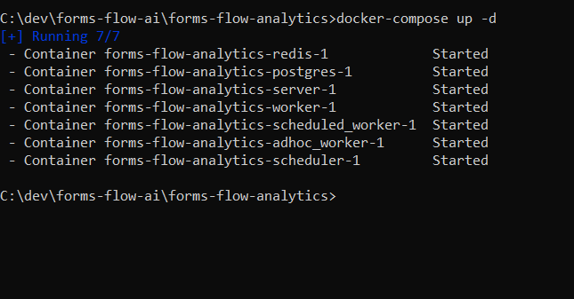
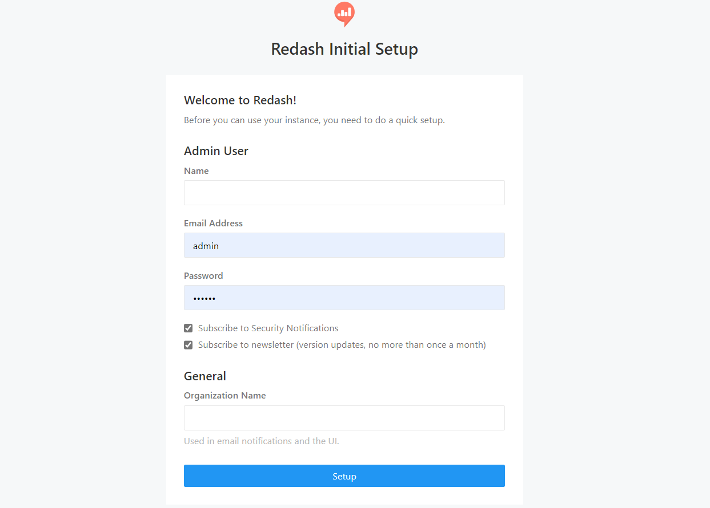

Analytics Engine
Formsflow.ai leverages Redash to build interactive dashboards and gain insights. To create meaningful visualization for your use case with formsflow.ai checkout Redash Knowledge base.
Prerequisites
Installation
- Make sure you have a Docker machine up and running.
- Make sure your current working directory is "forms-flow-ai/forms-flow-analytics".
- Rename the file sample.env to .env.
- Modify the environment variables inside .env file if needed. Environment variables are given in the table below
NOTE :
{your-ip-address} given inside the .env
file should be changed to your host system
IP address. Please take special care to identify the correct IP address if
your system has multiple network cards

* REDASH_HOST
Running the application
- Analytics service uses port 7000, make sure the port is available.
cd {Your Directory}/forms-flow-ai/forms-flow-analytics
The forked version of redash is being used to overcome the limited cors support in redash. The forked repo fixes the cors issues. But if the environment is setup in such a way that redash resides in the same url origin as forms web application , redash can be built from any redash images.
- Run
docker-compose run --rm server create_dbto setup database and to create tables. - Run
docker-compose up -dto start.


NOTE: Use --build command with the start command to reflect any future
.env changes eg :
docker-compose up --build -d
To stop the application
- Run
docker-compose stopto stop.
Health Check
- Check the public endpoint :
{your-ip-address}:7000/ping

- The application should be up and available for use at port defaulted to 7000 in http://localhost:7000/ and register with any valid credentials.
Get the Redash API Key
- Login to redash hosted instance (i.e. http://localhost:7000/) using the admin credentials passed for registration / SAML credentials
- Go to User Icon -> Profile -> Settings
- Go to Account Section
- Copy API Key to Clipboard
« Previous Next »